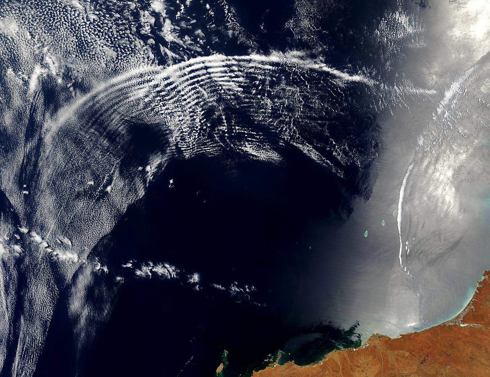
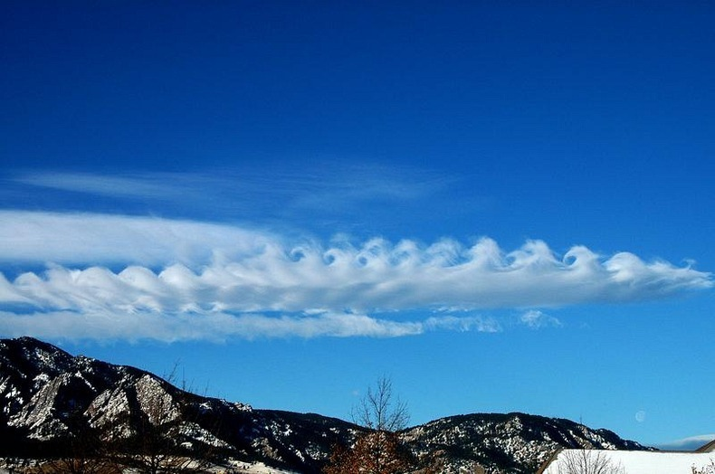
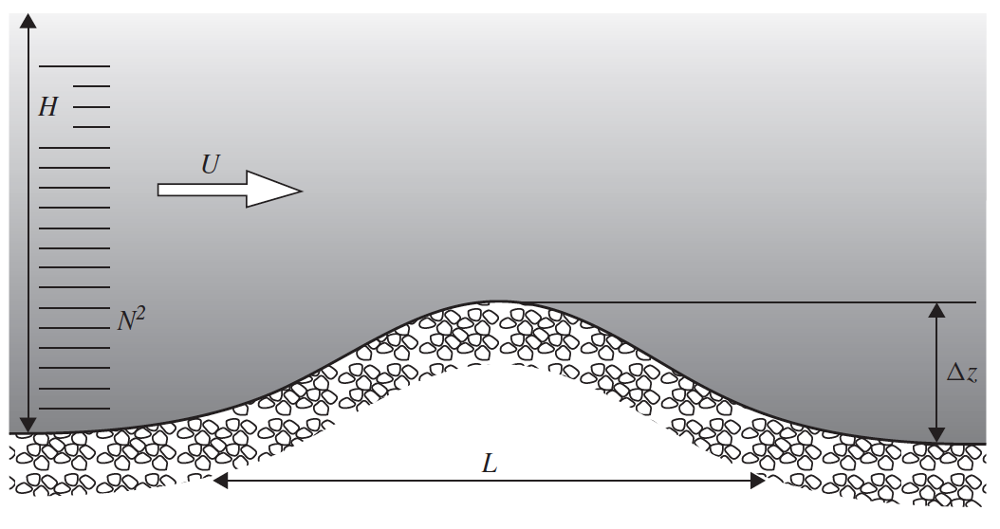

class: center, middle <br/><br/> .title[Dinámica de Fluidos Geofísicos] .subtitle[Estratificación] <br/><br/> .author[Semestre 2022-I] .institution[Facultad de Ciencias] <br/> .date[14 de noviembre de 2023] <br/><br/> <img style="width:100%" src="./figures/green_waves.png"> <!-- .note[Created with [{Liminal}](https://github.com/jonathanlilly/liminal) using [{Remark.js}](http://remarkjs.com/) + [{Markdown}](https://github.com/adam-p/markdown-here/wiki/Markdown-Cheatsheet) + [{KaTeX}](https://katex.org)] --> --- name: toc class: left <img style="width:40%" src="./figures/ink.jpg"> #Contenido 1. [Estabilidad estática](#estabilidad) 1. [Importancia de la estratificación: Número de Froude](#froude) <!-- Comment out the next slide if you don't want the Table of Contents link --> --- layout: true .toc[[✧](#toc)] --- class: left ## Estratificación .left-column[ Hemos visto que la rotación genera rigidez vertical en el flujo. ¿Y la estratificación? Veremos que da "rigidez horizontal" porque el fluido se acomoda en capas de densidad mayor en el fondo de la columna de fluido.] .right-column[ .center[]] --- class: left ## Efecto de la estratificación Ya habíamos visto un poco de los efectos de la estratificación en la clase 2: .left-column[Muevo elemento de fluido en equilibrio de $Z$ hasta $Z+h$ $\rightarrow$ **fuerza boyante** La frecuencia de oscilación$^1$.footnote[$1.$ Conocida como frecuencia de Brunt-Väisälä] del elemento de fluido está dada por: $$N^2=\frac{g}{\rho_0}\frac{\partial{\rho}}{\partial z}$$ $\uparrow N^2$ inhibe movimientos verticales y da estructura vertical al flujo.] .right-column[<img style="width:90%" src="./figures/latte_annotated.jpg">] --- class: left **Demo: Frecuencia de Brunt-Väisälä** <br/><br/><br/> .center[<iframe width="560" height="315" src="https://www.youtube.com/embed/_DqOyvWwqWI?start=116" title="YouTube video player" frameborder="0" allow="accelerometer; autoplay; clipboard-write; encrypted-media; gyroscope; picture-in-picture" allowfullscreen></iframe>] .caption[Video de Fabrizio Croccolo] --- Algunas consecuencias de la estratificación (próximas clases): .left-column[ Si la estratificación es principalmente vertical (capas de distinta densidad apliadas) --> **ondas de gravedad internas** Si la estratificación tiene una componente horizontal --> Efectos como **viento termal**, **ajuste geostrófico** y más ondas Si hay perturbaciones que crecen indefinidamente alimentadas por energía potencial --> **inestabilidades** (¡Puede ser un tema para proyecto final!)] .right-column[  .caption[MODIS-Terra NASA, 11/nov/2003.]  .caption[NCAR UCAR opensky]] --- class: left name: estabilidad ## Estabilidad estática Fluido ligero sobre pesado --> estable Fluido pesado sobre ligero --> inestable El flujo vuelca para (overturn) para regresar a una configuración de equilibrio (Ver - Frecuencia de Brunt-Väisälä) Si el fluido se encuentra en un estado de desestabilización permanente (ej. calentado desde el fondo), el fluido se mantiene en movimiento --> *convección*. --- class: left name: froude ## Importancia de la estratificación Ejemplo: El obstáculo fuerza el desplazamiento vertical de una porción del fluido --> energía gravitacional. La estratificación actuará para limitar o minimizar el desplazamiento vertical, tal vez forzando al fluido a rodear el obstáculo. Entre mayor sea la restricción, mayor será la importancia de la estratificación. **Número de Froude**: $Fr=U/NH$. Si $Fr\le 1$, la estratificación es importante. .center[] .caption[Fig 11.5 de Cushman-Riosin y Beckers. ] --- class: left ### Referencias: Cushman-Roisin y Beckers, capítulo 11. </br></br></br></br></br></br></br></br> .note[Notas creadas con [{Liminal}](https://github.com/jonathanlilly/liminal) usando [{Remark.js}](http://remarkjs.com/) + [{Markdown}](https://github.com/adam-p/markdown-here/wiki/Markdown-Cheatsheet) + [{KaTeX}](https://katex.org)]